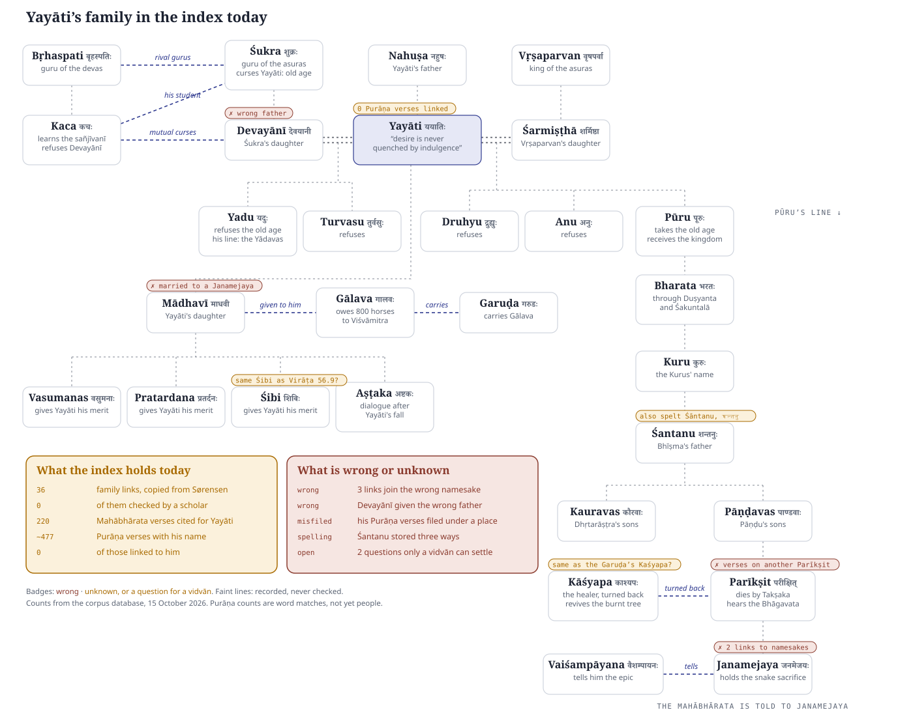
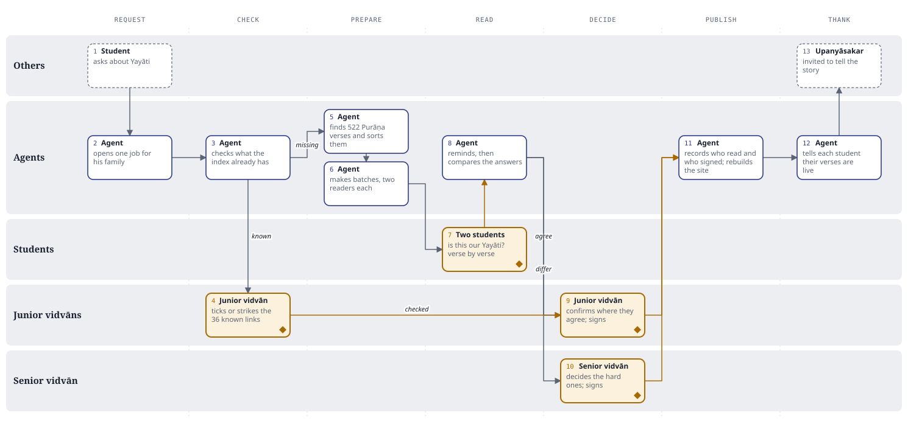

The Nāma-Kośa will be an index of every person and place in the eighteen Purāṇas, each tied to the verses that name them. Building it means careful reading of 351,225 verses. This page follows one request from start to finish, to show which parts software agents can take on and where a person has to decide.
A pāṭhaśālā student is asked: "Is there a character whose story you would like to tell?" The answer is Yayāti, the king who traded his old age for his son's youth. He matters well beyond his own story: his son Pūru's line leads to the Kauravas, the Pāṇḍavas and Parīkṣit, and his story is told again in the Bhāgavata and other Purāṇas.
Here is his family as our index holds it today. Switch to After to see what it should look like once the work is done. The rest of the page is how it gets from one to the other.

Round markers are work an agent does by itself. Diamonds are where the work stops and waits for a person.
An agent opens one job for Yayāti and his whole family. If someone later asks about Devayānī or Pūru, the request joins this job instead of starting the work again.
Before anyone reads a verse, an agent looks up what the index already holds about these 27 people. A great deal is there, copied from printed indexes, but no scholar has checked any of it.
Why this step comes first: nobody rereads what is already settled, and nobody trusts a link just because it is there.
A junior vidvān goes through the 36 known links as a list, ticking the right ones and striking the wrong ones, such as the links to the wrong Janamejaya and Devayānī's wrong father. That is a short sitting, not a reading of the Mahābhārata.
An agent searches all eighteen Purāṇas for every form of his name, and for Nāhuṣa ("son of Nahuṣa"), which also refers to him. It sorts what it finds so that students read stories as stories, not as scattered lines. It then sends batches of twenty verses to two students each. A few verses in every batch already have known answers, which checks the reading.
| What the agent found | Verses | How students get it |
|---|---|---|
| In chapters that tell his story | 168 | In order, with the chapter heading |
| In family lists | 22 | A quick check |
| Passing mentions | 285 | One verse at a time |
| "Nāhuṣa" only: may be someone else | 45 | Read closely |
| Place names built on his name | 2 | Set aside |
| All eighteen Purāṇas | 522 | Matsya 121, Padma 103, Skanda 66, Bhāgavata 45, and others |
The first trial of this search made mistakes, which is why people read what it finds. It put two Kṛṣṇa chapters among Yayāti's stories because they mention Yadu and Śukra, and शुक्र can also mean the planet. It also counted a verse where "son of Nāhuṣa" means Yadu, Yayāti's son.
On a phone, each student answers one question per verse: is this our Yayāti? They throw out false matches, such as शिबिका (a palanquin) caught by a search for Śibi, or देवयान (the path of the gods) caught by a search for Devayānī.
Meanwhile an agent keeps things moving. If a batch sits untouched, it sends a reminder after three days and passes the batch to another student after seven. When both students are done, it compares their answers.
Where the two students agree, a junior vidvān confirms and signs. Where they disagree, or the question is hard, it goes to the senior vidvān, with the evidence laid out on one page by an agent. The senior vidvān sees only these.
| Mahābhārata, told to Janamejaya | Bhāgavata, told to Parīkṣit | |
|---|---|---|
| The curse | He hangs a dead snake on the silent sage Śamīka; Śamīka's son curses him to die by Takṣaka within seven days.Ādi 40–44 | The same insult and the same curse: तक्षकः सप्तमेऽहनि दङ्क्ष्यति.1.18.37 |
| The seven days | He shuts himself in a palace on a single pillar, guarded by physicians and mantras.Ādi 40–44 | He gives up the kingdom and fasts on the bank of the Gaṅgā; Śuka comes and tells him the Bhāgavata.1.19.7; 12.6.10 |
| Kāśyapa | The healer revives a tree Takṣaka has burnt; Takṣaka pays him to turn back.Ādi 40–44 | Takṣaka meets Kāśyapa on the road and turns him back with wealth.12.6.11–12 |
| The death | Takṣaka hides as an insect in fruit brought to the king.Ādi 40–44 | Takṣaka comes disguised as a brāhmaṇa; the king no longer fears death.12.6.5, 12.6.12–13 |
| The sacrifice stops | The boy Āstīka asks for a boon and halts it.Ādi 54–58 | Bṛhaspati persuades the king to stop.12.6.16–28 |
Highlighted rows differ. The Mahābhārata column is from memory and must be checked by a vidvān before it is shown.
Each signed decision is recorded with the names of the students who read it and the vidvān who signed it. Overnight the website is rebuilt from these records. Yayāti's page now lists his verses in each Purāṇa, and the map above becomes the After picture. Each student gets a WhatsApp message: "Your verses on Bhāgavata 9.18 are live." An upanyāsakar is invited to tell the story from the signed verses.
तस्यां गतायां स्वगृहं ययातिर्मृगयां चरन् ।
प्राप्तो यदृच्छया कूपे जलार्थी तां ददर्श ह ॥
Tap the name in the verse to see who read it. Nothing is printed in the verse itself.
Listed by name, alphabetically, with no ranking.
Each row is who acts. Gold boxes with a diamond are where a person decides.

The Harivaṃśa pilot covers 16,100 verses and up to 4,034 names, over 9 months, for ₹37.5 lakh. Nearly all of that cost is people's reading time. Running half the chapters with agents and half without shows whether the agents save that time, before they are used on all 351,225 verses.
This follows the Scholar Workbench design from August 2026 (How the index gets made). Where this page and that design differ, the design wins.
{"verse": "Bhāgavata 9.18.18",
"as_written": "ययातिर्",
"person": "Yayāti (inm:12607)",
"decision": "this person",
"read_by": ["Student A", "Student B"],
"signed_by": "Vidvān C",
"signed": "2026-11-14",
"replaces": null}
Counts on this page are from the corpus database and the Śrī Śāradā Pīṭham Purāṇa texts, 15 October 2026. Purāṇa counts are word matches, before anyone has read them. Mahābhārata chapter numbers are working references still to be checked. Names in the mock-ups are placeholders.